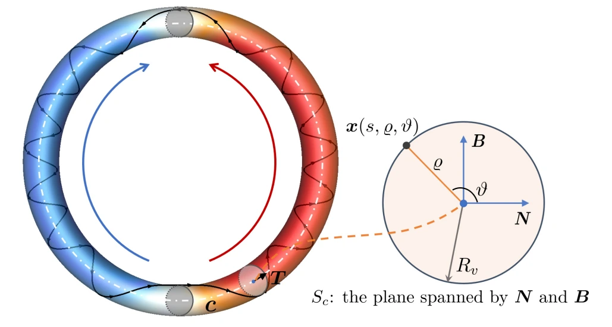
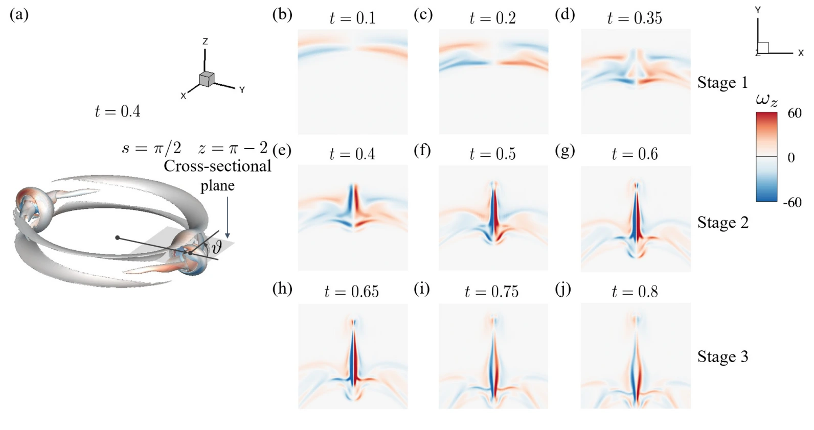

Vortex bursting is usually driven. The standard recipe prescribes a perturbation — a core-size change, a differential twist, a nearby boundary — and watches a vortex tube break down. This study removes all of it: no imposed flow, no initial vorticity, a fluid at rest.
涡爆裂通常是被驱动的。标准做法是给定一个扰动——涡核尺寸变化、非均匀扭转、邻近边界——然后观察涡管瓦解。本研究把这些全部去掉：没有外加流动，没有初始涡量，流体静止。
What remains is a magnetic field. The initial condition is a closed magnetic ring whose two halves twist in opposite senses, meeting at two chirality-inversion regions. Everything that follows — vorticity, motion, energy release and the eventual breakdown of coherent structures — has to come from that geometry.
剩下的只有一个磁场。初始条件是一根闭合磁环，其两半以相反方向扭转，在两个手性反转区相遇。此后发生的一切——涡量、运动、能量释放，以及相干结构最终的瓦解——都必须来自这个几何。
That is a strong claim and worth stating precisely: this is a self-contained magnetic route to eruptive dynamics. The simulations trace a three-stage bursting process from a quiescent start. This paper has been accepted for publication in the Journal of Fluid Mechanics.
这是一个很强的论断，值得被精确表述：这是一条自足的、由磁场通往爆发动力学途径。模拟从静止出发追踪了一个三阶段的爆裂过程。本文已被 Journal of Fluid Mechanics 接受发表。
No imposed flow and no initial vorticity: the fluid starts at rest and the only structure is a closed magnetic ring whose two halves carry opposite twist, meeting at two chirality-inversion regions.
没有外加流动，也没有初始涡量：流体初始静止，唯一的结构是一根闭合磁环，其两半携带相反的扭转，在两个手性反转区相遇。
The curl of the Lorentz force is a localized vorticity source peaking at the chirality inversions, while the pressure gradient launches counter-propagating Alfvén waves from the regions of maximum twist; their interaction initiates the bursting.
洛伦兹力的旋度是一个在手性反转区达到峰值的局部涡量源；与此同时，压力梯度从扭转最大处发射出相向传播的阿尔芬波，两者的相互作用触发了爆裂。
A three-stage process: a disk-like vortex forms as magnetic energy converts to kinetic energy, the structure expands and stretches with dissipation rising, then coherent structures break down through reconnection and fragmentation — with stronger radial spreading at higher Lundquist numbers.
一个三阶段过程：磁能转化为动能、盘状涡结构形成；结构径向扩张拉伸、耗散上升；随后相干结构经重联与碎裂而瓦解——伦德奎斯特数越高，径向扩张越强。
A ring with two chiralities一根带两种手性的环
The initial magnetic field is a smooth closed ring with a sinusoidally varying twist, so the two halves twist in opposite senses and meet at two chirality-inversion regions. The velocity is zero everywhere.
初始磁场是一根光滑的闭合磁环，扭转按正弦规律变化，因此两半以相反方向扭转，并在两个手性反转区相遇。速度处处为零。
The geometry is the experiment. Opposite chiralities guarantee that the magnetic tension force cannot be symmetric about the ring: where the twist reverses, the field’s own geometry produces a stress concentration that a uniformly twisted tube would not have.
几何本身就是实验。相反的手性保证了磁张力不可能关于磁环对称：在扭转反向的地方，磁场自身的几何会产生一个均匀扭转磁管所不具备的应力集中。
Numerically the flow is incompressible magnetohydrodynamics solved with a pseudo-spectral method on a three-dimensional periodic domain at 1024³ resolution and unit magnetic Prandtl number. Three Lundquist numbers, approximately 800, 1600 and 2670, probe the balance between Alfvénic evolution and resistive diffusion.
数值上，这是用伪谱方法在三维周期域上求解的不可压磁流体力学，分辨率为 1024³，磁普朗特数为 1。三个伦德奎斯特数——约 800、1600 与 2670——用于探测阿尔芬演化与电阻扩散之间的平衡。


Where the vorticity comes from涡量从哪儿来
With no initial vorticity, the only source is the curl of the Lorentz force. It is not uniform: its magnitude peaks in the chirality-inversion regions, which is where the first motion appears and where the bursting later initiates.
在没有初始涡量的情况下，唯一的源是洛伦兹力的旋度。它并不均匀：其幅值在手性反转区达到峰值，那里也正是最初的运动出现、以及稍后爆裂启动的地方。
Meanwhile a second, distinguishable process is running. The pressure gradient generates an antisymmetric cross-helicity distribution in the regions of maximum twist — the signature of counter-propagating Alfvén waves launched from where the twist is strongest.
与此同时，第二个可区分的过程也在进行。压力梯度在扭转最大的区域产生一个反对称的交叉螺旋度分布——这正是从扭转最强处发射出的相向传播阿尔芬波的签名。
The mechanism is the interaction of the two. The Alfvén waves travel toward the chirality-inversion regions, where they meet locally generated vorticity and amplify field-line deformation. Bursting therefore emerges from the initial magnetic configuration rather than from any external strain or prescribed vortex.
机制在于两者的相互作用。阿尔芬波向手性反转区传播，在那里与局部生成的涡量相遇，并放大磁力线的变形。因此，爆裂是从初始磁构型中涌现出来的，而不是来自任何外加应变或预先设定的涡。
Formation, expansion, breakdown形成、扩张与瓦解
Stage one is the formation of a disk-like vortex structure — the shape characteristic of vortex bursting — accompanied by rapid conversion of magnetic energy into kinetic energy. This is the stage that connects most directly to the classical bursting literature.
第一阶段是盘状涡结构的形成——那正是涡爆裂的特征形态——同时伴随磁能向动能的快速转化。这是与经典爆裂文献联系最直接的一阶段。
Stage two is radial expansion and stretching, with enhanced magnetic and kinetic dissipation and increasing cross- and kinetic-helicity components. Higher Lundquist numbers produce greater radial spreading and stronger peaks in those components, which is the expected direction: less resistive diffusion lets the Alfvénic dynamics run further before being damped.
第二阶段是径向扩张与拉伸，伴随磁耗散与动能耗散增强，以及交叉螺旋度与动能螺旋度分量的上升。伦德奎斯特数越高，径向扩张越广、这些分量的峰值越强——这正是预期的方向：电阻扩散越弱，阿尔芬动力学在被阻尼之前就能跑得越远。
Stage three is the breakdown of the organised vortex and magnetic structures — reconnection and fragmentation, with helicity components decaying and dissipation rates declining. The system ends less organised and less energetic than at its peak, which is what an eruptive event should look like.
第三阶段是有组织的涡结构与磁结构瓦解——重联与碎裂，螺旋度分量衰减，耗散率下降。系统最终比其峰值时刻更无序、也更缺乏能量，而这正是一次爆发事件应有的样子。


What the mechanism can explain这个机制能解释什么
The contribution is a pathway. Starting from a magnetic configuration alone, the simulations produce localized vorticity, propagating Alfvén waves, their interaction, an eruptive breakdown and a return to a dissipated state — a chain that can be checked stage by stage rather than asserted.
这项贡献是一条路径。仅从磁构型出发，模拟就产出了局部涡量、传播的阿尔芬波、两者的相互作用、一次爆发式瓦解，以及回到耗散状态的回归——这条链条可以逐阶段检验，而不是被断言。
That makes it useful for interpretation. Twisted flux tubes appear in solar and laboratory plasmas, and eruptive events there are usually attributed to instabilities or reconnection; this shows a route in which the twist distribution alone organises the onset, with the geometry deciding where it happens.
这使它对解释观测很有用。扭转磁通管出现在太阳与实验室等离子体中，而那里的爆发事件通常被归因于不稳定性或重联；这项工作展示了一条路径：仅扭转分布本身就组织了爆发的起始，而几何决定了它在哪里发生。
The limits are the usual ones and the paper states them. The simulations are incompressible, use unit magnetic Prandtl number and run at Lundquist numbers well below those of the solar corona, so this is not a direct reproduction of a solar eruption. The work isolates a mechanism under conditions chosen to make it visible; whether it dominates in a real corona is a separate question.
局限是这类工作常见的那些，论文也写明了。模拟是不可压的、磁普朗特数为 1、伦德奎斯特数远低于太阳日冕的实际值，因此这不是对太阳爆发的直接复现。该工作在为使机制可见而选定的条件下把它分离出来；它在真实日冕中是否占主导，是另一个问题。
Paper & authors
Vortex bursting in twisted magnetic flux tubes with opposite chiralities
J. Fluid Mech.
Cite this work
@article{wangVortexBursting,
title = {Vortex bursting in twisted magnetic flux tubes with opposite chiralities},
author = {Wang, Yanru and Xiong, Anda and Hao, Jinhua and Xiong, Shiying},
journal = {Journal of Fluid Mechanics}
}